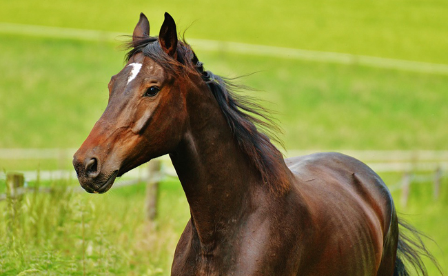
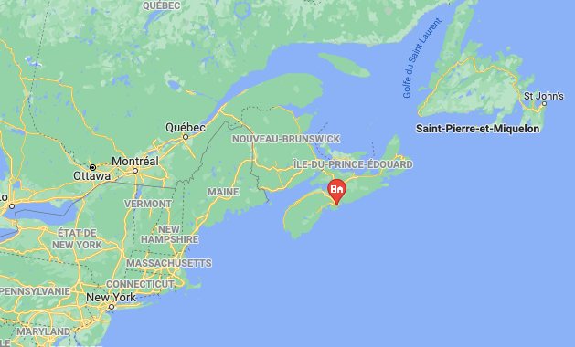

Bonjour, je suis Clémence 😃
Qui suis-je?
Je suis étudiante, j'ai 19 ans. 3 points me caractérisent actuellement :
- Ma passion pour l'équitation
- Mon échange universitaire avec l'université Dalhousie au Canada
- Mon projet de groupe Gourd'Duo tourné vers l'innovation et le développement durable
Tout ceci est rendu possible grâce à mes études au sein du parcours grande école de l'IESEG.

Ma passion : l'équitation
Je suis passionnée des chevaux depuis mon plus jeune âge
et tout particulièrement de mon cheval Buxa dont je m'occupe dès que je rentre chez moi.
Dalhousie University
Fin août 2022, je partirai un semestre en échange universitaire au sein de "Dalhousie University"" située dans la ville de Halifax, capitale de la Nouvelle Ecosse au Canada
Gourd'Duo
Co-conçu lors d'un groupe de travail IESEG, Gourd'Duo offre une gamme de gourdes innovantes et éco responsables. Pour plus d'informations, rendez-vous sur le site de la marque.